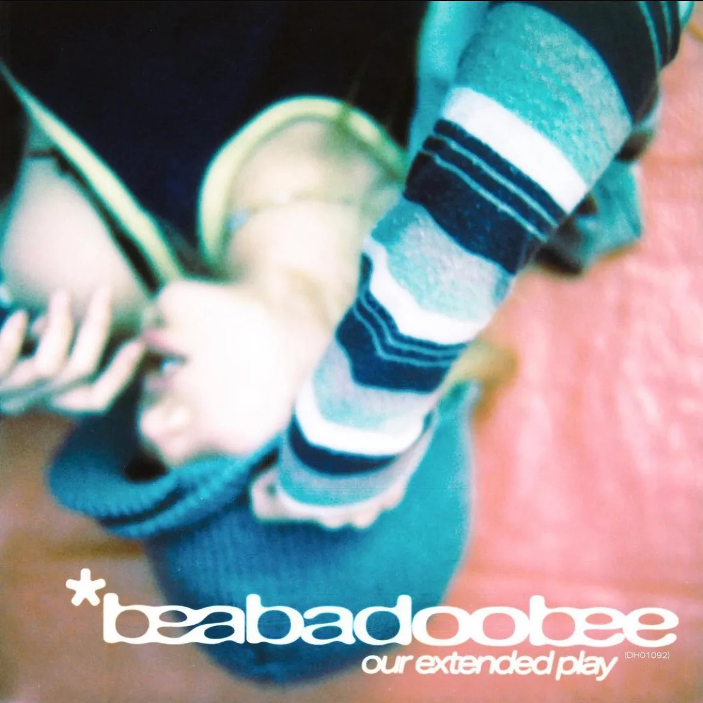

i left the city for the first time in a few months this weekend. leaving the city always gives me a weird feeling. a feeling that i kind of can't describe. a feeling where i'm glad to be leaving while also sad that i'm leaving everything. i know this sounds dramatic but it's true. i get the same feeling going back home to see my family. i feel like i have two different worlds that i live in. one in the city and one away from the city.
as i sit in this hotel room, i can't help but endulge in my ability to overthink. overthink literally every aspect of my life but right now i'm overthinking about this specific person. i've spent the last two days thinking about them and wondering why it feels off. i think it's just me but i don't know. being around this person, i've honestly never felt this kind of feeling before. i feel so entranced by them. this burning fire in my heart i have for them is truly one of a kind. maybe one day i'll show this to that person and they'll read it and we'll laugh about how silly i was being. i really hope for this. i guess this leads back to when i was talking about desire and longing and how crazy it drives me.
the song i wanted to talk about this week was a song that reminds me of this person. a song that played when me and them were laying in their bed together. it's called "animal noises" by beabadoobee. the song really hit me in that moment. there's a type of innocence in the lyrics "I miss the mornings I spent making animal noises with you". the innocence of laying with someone you love, doing stupid things together and really feeling how much love you really have for this person. the fear of not being able to do this because of being judged really scares me. i really hope i can make animal noises with this person one day.
i also like to point out another aspect of this song that i like. the fear of growing up. growing up is scary. change is scary. not having that security you have as a child is scary. the wholesome moments you made as a child feel so far away yet so close at the same time. just out of hands reach.
i guess i kind of let all of my feelings out in this page. it's easier to write about everything then actually do something about it.
listen to my favorite song of the week!
